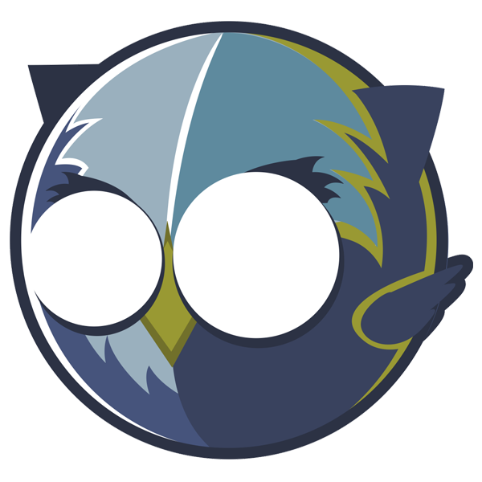

Intro
Openkratio

Recordando...
- Anteriormente Open Data Sevilla
- Desde septiembre de 2011

Openkratio es
Una asocionación ciudadana motivada por inculcar en la sociedad, y especialmente en las Administraciones Públicas, los principios del Gobierno Abierto y los Datos Abiertos .
Nuestros principios
|
|
Nuestras áreas de trabajo
- Divulgación y concienciación
- Formación
- Presión ciudadana
- Proyectos o hacking ético
Algunos proyectos
- Proyecto Colibrí
- Adopta una playa
- Congreso Gobierno Abierto y Open Data
- Visualizaciones de presupuestos
- Aportaciones y presión en Leyes de transparencia y participación
Canales
- Nuestra web: openkratio.org
- Lista correo: opendatasev (Google Groups)
- Twitter: @openkratio
- GitHub: github.com/openkratio